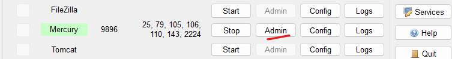

RandomJokes is an email-invite based application where users can access random jokes through links sent to their emails.
This demo highlights how to configure and utilize the Mercury Mail server included in XAMPP alongside Thunderbird email client.
Setup XAMPP: If you haven't already, download and install XAMPP. During installation, ensure that the Mercury mail server is enabled.
Open the XAMPP control panel and start Apache, MySQL, and Mercury.
Open Mercury Admin: Open the Mercury Admin panel by clicking the "Admin" button in the Mercury section of the XAMPP Control Panel.

Add Local User: In the Mercury Admin panel,
navigate to Configuration -> Manage local users...
Click "Add" and enter the following user details:
| Username | : | randomjokes |
| Personal Name | : | RandomJokes |
| Mail Password | : | 123456 |
Then, repeat this process to add two more users:
| Username | : | userone |
| Personal Name | : | User One |
| Mail Password | : | 123456 |
| Username | : | usertwo |
| Personal Name | : | User Two |
| Mail Password | : | 123456 |
Set Up Thunderbird: Download and install Thunderbird email client if you haven't already.
Next, register the email account for the RandomJokes user in Thunderbird. Use the same credentials we entered in Mercury.
Repeat this process to register the email accounts for User One and User Two in Thunderbird as well.
Test Thunderbird: Create an email from the
RandomJokes user and send it to User One and User Two in Thunderbird.
Make sure to change their email addresses to use @localhost.net to represent valid local addresses, which we will also use in the application later.
Grab the Project: Clone or download github.com/kulotsystems/randomjokes repository to your XAMPP htdocs folder.
Import the Database:
Open phpMyAdmin
and create a new database named randomjokes.
Once the database is created, import the config/randomjokes.sql file from the cloned project into it.
Try the App:
Visit localhost/randomjokes
and have User One and User Two access the jokes.
Make sure to use @localhost.net as their email domain. You can view the emails sent by the app in Thunderbird.